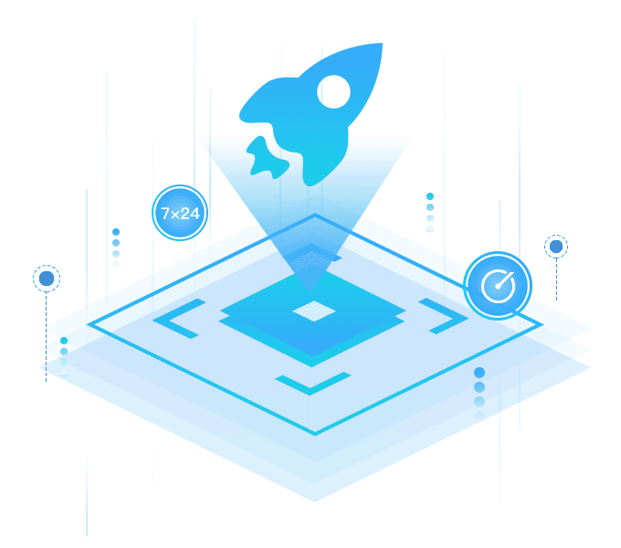

监控平台
监控平台
提供全方位监控，快速发现平台故障立即修复及避免故障。
 告警平台
告警平台
对告警进行分类汇总，接收及时有效的告警信息。
 日志平台
日志平台
集中收集日志，归档，压缩，备份，强大的分析和报表功能。
 可视化
可视化
提供多层监控运维视图，层层细化，方便快速定位异常。

全方位监控
提供从系统层到应用层，从硬件到软件，涵盖计算，网络，存储等核心服务的监控服务。

数据分析
对平台产生的日志，告警，监控数据进行深入分析，发现潜在问题。

快速排障
通过联动性全方位的监控可以层层升深入快速定位故障点。
解决客户一下痛点
 全面监控，有效监控集群状态
全面监控，有效监控集群状态UOS 是由多套子系统组成的一套集硬件和软件为一体的分布式系统，涵盖范围深且广，对监控带来很大挑战，UOS Operator 提供云平台由硬件到软件，从底层到上层，全方位监控，可以有效监控集群状态。
 及时快速定位故障信息
及时快速定位故障信息UOS 系统复杂，当系统出现故障时，及时快速定位故障信息，可以最大程度的减少损失，UOS Operator 涵盖丰富的报警，并且提供级联报警，从上层到下层，可及时快速定位故障信息。
 可靠性验证以及故障演练
可靠性验证以及故障演练云平台是构建IT的基石，其稳定性以及可靠性至关重要，UOS 设计了云平台可靠性验证以及故障演练方案和系统，从云平台的多个维度进行可靠。
 整合多个运维工具，进行可视化运维，提高用户体验
整合多个运维工具，进行可视化运维，提高用户体验UOS Operator 整合多个运维工具到一个管理面板，设计了从高层到低层的多个维度的集群状态信息展示面板，可以进行可视化运维，提高运维效率，以及运维体验。
产品架构体系